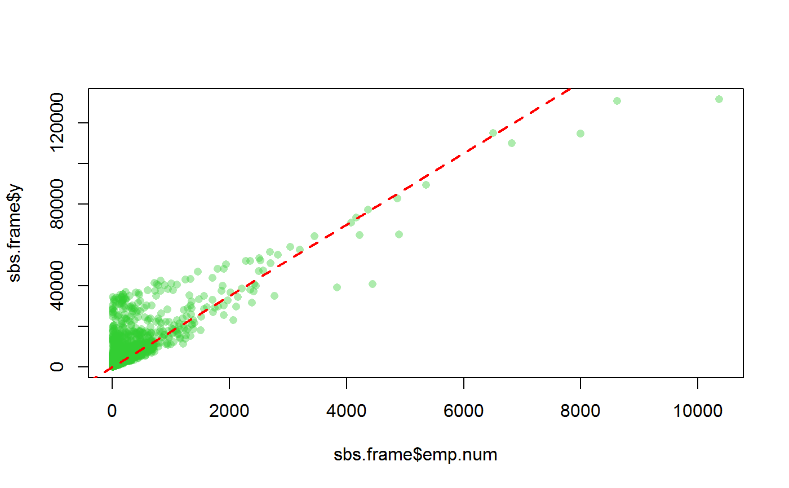

svystatB.RdComputes estimates, standard errors and confidence intervals for Multiple Regression Coefficients in subpopulations.
svystatB(design, model, by = NULL, vartype = c("se", "cv", "cvpct", "var"), conf.int = FALSE, conf.lev = 0.95, deff = FALSE, na.rm = FALSE) # S3 method for svystatB coef(object, ...) # S3 method for svystatB SE(object, ...) # S3 method for svystatB VAR(object, ...) # S3 method for svystatB cv(object, ...) # S3 method for svystatB deff(object, ...) # S3 method for svystatB confint(object, ...) # S3 method for svystatB summary(object, ...)
| design | Object of class |
|---|---|
| model | Formula specifying the linear model whose coefficients have to be estimated. |
| by | Formula specifying the variables that define the "estimation domains" (see ‘Details’). If |
| vartype |
|
| conf.int | Compute confidence intervals for the estimates? The default is
|
| conf.lev | Probability specifying the desired confidence level: the default value is |
| deff | Should the design effect be computed? The default is |
| na.rm | Should missing values (if any) be removed from the variables of interest? The default is
|
| object | An object of class |
| ... | Additional arguments to |
This function computes weighted estimates for Multiple Regression Coefficients using suitable weights depending on the class of design: calibrated weights for class cal.analytic and direct weights otherwise. Standard errors are calculated using the Taylor linearization technique.
The mandatory argument model identifies the regression model whose population coefficients have to be estimated (for details on model specification, see e.g. lm). The design variables referenced by model should be numeric or factor (variables of other types - e.g. character - will need to be converted in advance, e.g. using function des.addvars).
The optional argument by specifies the variables that define the "estimation domains", that is the subpopulations for which the estimates are to be calculated. If by=NULL (the default option), the estimates produced by svystatB refer to the whole population. Estimation domains must be defined by a formula: for example the statement by=~B1:B2 selects as estimation domains the subpopulations determined by crossing the modalities of variables B1 and B2. Notice that a formula like by=~B1+B2 will be automatically translated into the factor-crossing formula by=~B1:B2: if you need to compute estimates for domains B1 and B2 separately, you have to call svystatQ twice. The design variables referenced by by (if any) should be of type factor, otherwise they will be coerced. Note that, to prevent obvious collinearity issues, the variables referenced by argument by must not appear in the input model formula: otherwise, the program will stop and print an error message.
The conf.int argument allows to request the confidence intervals for the estimates. By default conf.int=FALSE, that is the confidence intervals are not provided.
Whenever confidence intervals are requested (i.e. conf.int=TRUE), the desired confidence level can be specified by means of the conf.lev argument. The conf.lev value must represent a probability (0<=conf.lev<=1) and its default is chosen to be 0.95.
The optional argument deff allows to request the design effect [Kish 1995] for the estimates. By default deff=FALSE, that is the design effect is not provided. The design effect of an estimator is defined as the ratio between the variance of the estimator under the actual sampling design and the variance that would be obtained for an 'equivalent' estimator under a hypothetical simple random sampling without replacement of the same size. To obtain an estimate of the design effect comparing to simple random sampling “with replacement”, one must use deff="replace".
For nonlinear estimators, the design effect is estimated on the linearized version of the estimator (that is for the estimator of the total of the linearized variable, aka "Woodruff transform").
When dealing with domain estimation, the design effects referring to a given subpopulation are currently computed by taking the ratios between the actual variance estimates and those that would have been obtained if a simple random sampling were carried out within that subpopulation. This is the same as the srssubpop option for Stata's function estat.
Missing values (NA) in model variables should be avoided. If na.rm=FALSE (the default) they generate an error. If na.rm=TRUE, observations containing NAs in model variables are dropped, and estimates get computed on non missing values only. This implicitly assumes that missing values hit interest variables completely at random: should this not be the case, computed estimates would be biased.
The summary method invoked on regression coefficients (say b) estimated via svystatB, gives p-values and significance codes for the component-wise test b = 0. Such values are computed assuming that the distribution of the regression coefficients estimators is normal (which is asymptotically true for large scale surveys). This assumption has the advantage of overcoming the problem of choosing the "right" statistic and assessing its "right" number of degrees of freedom when using data from a complex survey (see e.g. [Korn, Graubard 1990]).
Function svystatB overcomes problems arising from exact collinearity between model variables via ‘aliasing’ (see the ‘Examples’ Section). Put simply, aliasing discards redundant (i.e. collinear) regressors, yielding exact estimates and standard errors for non-aliased regression coefficients (namely, the same results that would be obtained with a reduced - no collinearity - model). Note that for the way aliasing works, the order of the terms in the linear model formula definitely matters.
Collinearity between variables may manifest itself in subsets of the sample, and with different patterns across subsets. In domain estimation, this phenomenon can have an impact on the structure of svystatB's output. In fact, owing to aliasing, the estimable regression coefficients - for the same input linear model - can be different across domains. In such cases, the domain estimates produced by svystatB can no longer be stored in a data.frame, and the output object will instead be a list (see the ‘Examples’ Section). Note that for these svystatB's return objects (whose class is svystatB.by.list) no variance extractors are currently available.
Note also that, for the reasons above, the usage of svystatB via function svystat is restricted: it is not allowed to specify svystat's arguments by and group when kind == "B".
An object inheriting from the data.frame class, whose detailed structure depends on input parameters' values. In special cases (see Section ‘Collinearity, Aliasing and Impacts in Domain Estimation’), a list object.
Sarndal, C.E., Swensson, B., Wretman, J. (1992) “Model Assisted Survey Sampling”, Springer Verlag.
Kish, L. (1995). “Methods for design effects”. Journal of Official Statistics, Vol. 11, pp. 55-77.
European Commission, Eurostat, (2013). “Handbook on precision requirements and variance estimation for ESS households surveys: 2013 edition”, Publications Office. doi: 10.2785/13579
Korn, E.L., Graubard, B.I. (1990) “Simultaneous testing of regression coefficients with complex survey data: Use of Bonferroni t statistics”. The American Statistician, 44, 270-276.
Estimators of Totals and Means svystatTM, Ratios between Totals svystatR, Shares svystatS, Ratios between Shares svystatSR, Quantiles svystatQ, Complex Analytic Functions of Totals and/or Means svystatL, and all of the above svystat.
###################################################### # A simple regression model with a single predictor. # # Let's compare the estimated regression coefficient # # to its true value computed on the sampling frame. # ###################################################### # Load sbs data: data(sbs) # Create a design object: sbsdes<-e.svydesign(data=sbs,ids=~id,strata=~strata,weights=~weight, fpc=~fpc) # The population scatterplot of y vs emp.num reveals a linear # behaviour: plot(sbs.frame$emp.num,sbs.frame$y, col=rgb(50,205,50,100,maxColorValue=255),pch=16)# Compute the population fit of the linear regression # model y~emp.num-1 (no intercept): pop.fit<-lm(y~emp.num-1,data=sbs.frame) abline(pop.fit,col="red",lwd=2,lty=2)# The obtained population R-squared is quite significant # (greater than 0.7): pop.R2<-summary(pop.fit)$r.squared pop.R2#> [1] 0.7283881#> emp.num #> 17.53945# Now let's estimate B on the basis of the sbs sample and # let's build a 95% confidence interval for the obtained estimate: svystatB(sbsdes,y~emp.num-1,conf.int=TRUE)#> RegCoef.y SE CI.l(95%) CI.u(95%) #> emp.num 17.54959 0.009214501 17.53153 17.56765# Thus, the confidence interval covers the true value of B. # Notice that using ReGenesees Complex Estimators function # svystatL, you would have obtained exactly the same results: sbsdes<-des.addvars(sbsdes,y4emp.num=y*emp.num, emp.num.sq=emp.num^2) svystatL(sbsdes,expression(y4emp.num/emp.num.sq), conf.int=TRUE)#> Complex SE CI.l(95%) CI.u(95%) #> y4emp.num/emp.num.sq 17.54959 0.009214501 17.53153 17.56765################################## # A multiple regression example. # ################################## # Let's estimate the coefficients of a model describing # value added (variable va.imp2) as a linear function # of number of employees by region and of nace.macro: b <- svystatB(sbsdes,va.imp2~emp.num:region+nace.macro,vartype="cvpct") b#> RegCoef.va.imp2 CV% #> (Intercept) 1561.91755 7.6425014 #> nace.macroIndustry 415.93033 30.3670410 #> nace.macroCommerce 3197.19585 10.0514767 #> nace.macroServices -115.03661 -109.6403342 #> emp.num:regionNorth 15.84036 0.2018553 #> emp.num:regionCenter 14.74595 0.5733876 #> emp.num:regionSouth 22.26434 1.0550597# To obtain p-values and significance codes for the # component-wise test t=0, you can exploit the # summary method: summary(b)#> RegCoef.va.imp2 CV% z value Pr(>|z|) #> (Intercept) 1561.91755 7.64250 13.0847 < 2.2e-16 *** #> nace.macroIndustry 415.93033 30.36704 3.2930 0.0009911 *** #> nace.macroCommerce 3197.19585 10.05148 9.9488 < 2.2e-16 *** #> nace.macroServices -115.03661 -109.64033 -0.9121 0.3617302 #> emp.num:regionNorth 15.84036 0.20186 495.4043 < 2.2e-16 *** #> emp.num:regionCenter 14.74595 0.57339 174.4021 < 2.2e-16 *** #> emp.num:regionSouth 22.26434 1.05506 94.7814 < 2.2e-16 *** #> --- #> Signif. codes: 0 ‘***’ 0.001 ‘**’ 0.01 ‘*’ 0.05 ‘.’ 0.1 ‘ ’ 1 #> #> NOTE: the distribution of regression coefficients estimators has been assumed normal #># Notice that estimators normality is assumed. ########################################## # Obtaining domain means via regression. # ########################################## # The domain mean of a numeric variable can be thought # as a regression coefficient. Suppose you need the # average number of employees by macro-sector, you can # do as follows: svystatB(sbsdes,emp.num~nace.macro-1)#> RegCoef.emp.num SE #> nace.macroAgriculture 37.20290 0.2081664 #> nace.macroIndustry 62.55560 0.1202409 #> nace.macroCommerce 22.61995 0.1969446 #> nace.macroServices 70.46560 0.1401686# ...which, indeed, gives exactly the same results of: svystatTM(sbsdes,y=~emp.num,by=~nace.macro,estimator="Mean")#> nace.macro Mean.emp.num SE.Mean.emp.num #> Agriculture Agriculture 37.20290 0.2081664 #> Industry Industry 62.55560 0.1202409 #> Commerce Commerce 22.61995 0.1969446 #> Services Services 70.46560 0.1401686########################## # Handling collinearity. # ########################## # Function svystatB overcomes problems arising from exact # collinearity between model variables via 'aliasing'. # To understand how aliasing works, let's build a manifestly # redundant linear model: svystatB(sbsdes,y~emp.num+I(2*emp.num)+I(3*va.imp2)+va.imp2-1)#> Warning: Variables I(2 * emp.num), va.imp2 have been aliased due to collinearity!#> RegCoef.y SE #> emp.num 13.22362914 0.101697196 #> I(3 * va.imp2) 0.08026756 0.001999472# The obtained warning message shows that order definitely matters # in aliasing, indeed: svystatB(sbsdes,y~emp.num+I(2*emp.num)+va.imp2+I(3*va.imp2)-1)#> Warning: Variables I(2 * emp.num), I(3 * va.imp2) have been aliased due to collinearity!#> RegCoef.y SE #> emp.num 13.2236291 0.101697196 #> va.imp2 0.2408027 0.005998415# Notice also that aliasing gives exact estimates and standard errors # for non-aliased regression coefficients (i.e. the same results that # would be obtained with a reduced - no collinearity - model): svystatB(sbsdes,y~emp.num+va.imp2-1)#> RegCoef.y SE #> emp.num 13.2236291 0.101697196 #> va.imp2 0.2408027 0.005998415############################################### # Handling missing values in model variables. # ############################################### # Load fpcdat: data(fpcdat) # Now, let's introduce some NAs in survey data: fpcdat$y[c(1,3)]<-NA fpcdat$x[c(3,5)]<-NA # Create a design object: fpcdes<-e.svydesign(data=fpcdat,ids=~psu+ssu,strata=~stratum,weights=~w, fpc=~fpc1+fpc2) # Let's estimate regression coefficients of model z~y+x # na.rm=FALSE (the default) leads to an error: if (FALSE) { svystatB(fpcdes,z~y+x) } # whereas na.rm=TRUE simply drops all the cases # with missing data in model variables: svystatB(fpcdes,z~y+x,na.rm=TRUE)#> Warning: Missing values in: y, x; corresponding observations (3) will be ignored!#> RegCoef.z SE #> (Intercept) 106.1338699 6.2859923 #> y 0.2839079 0.9679509 #> x -1.6402421 1.0672825################################## # Handling non positive weights. # ################################## # Non positive direct weights are not allowed, anyway some # calibrated weights can sometimes turn out to be <= 0. The # corrisponding observations would be dropped by svystatB. # Prepare a template for population totals: pop<-pop.template(fpcdes,~z+pl.domain-1) # Fill it with silly values in order to obtain some negative g-weights: pop[1,]<-c(20000,90,10,90) # Calibrate: fpccal<-e.calibrate(fpcdes,pop) # We got 2 negative calibrated weights: g.range(fpccal)#> g.min g.max #> -0.05392021 1.92609506#> [1] 2# Now, let's estimate regression coefficients of model z~y+x # and pay attantion to the warnings: svystatB(fpccal,z~y+x,na.rm=TRUE)#> Warning: Detected 2 observations with weight < 0: they will be ignored!#> Warning: Missing values in: y, x; corresponding observations (3) will be ignored!#> RegCoef.z SE #> (Intercept) 104.5892 5.9801452 #> y 1.8030 1.2176491 #> x -1.5671 0.8975358#################################################################### # Domain estimates of simple and multiple regression coefficients. # #################################################################### # Estimate the coefficients of the simple regression y ~ emp.num by domains # obtained crossing region and nace.macro: bb <- svystatB(sbsdes, model= va.imp2 ~emp.num, by= ~region:nace.macro) bb#> region nace.macro va.imp2_(Intercept) va.imp2_emp.num #> North.Agriculture North Agriculture 842.9496 42.3091438 #> Center.Agriculture Center Agriculture 714.6839 41.4635506 #> South.Agriculture South Agriculture 836.7250 0.1475394 #> North.Industry North Industry 2467.9005 17.2760716 #> Center.Industry Center Industry 1245.7685 14.9908592 #> South.Industry South Industry 1079.7160 27.4511564 #> North.Commerce North Commerce 4569.5413 51.3562763 #> Center.Commerce Center Commerce 1480.2246 145.3250201 #> South.Commerce South Commerce 2044.5361 116.4405700 #> North.Services North Services 1949.2717 11.6791111 #> Center.Services Center Services 1243.0960 22.0704522 #> South.Services South Services 985.5017 14.8051133 #> SE.va.imp2_(Intercept) SE.va.imp2_emp.num #> North.Agriculture 200.36361 0.51027026 #> Center.Agriculture 315.48137 1.99018108 #> South.Agriculture 121.36540 1.24616031 #> North.Industry 60.48224 0.03413831 #> Center.Industry 86.48950 0.06697296 #> South.Industry 78.88637 0.19581364 #> North.Commerce 415.82149 0.67943022 #> Center.Commerce 551.95262 29.77727894 #> South.Commerce 736.84330 14.91338010 #> North.Services 56.94492 0.02749377 #> Center.Services 86.75600 0.21878218 #> South.Services 72.95922 0.23464082#> RegCoef.va.imp2 SE z value Pr(>|z|) #> North.Agriculture:(Intercept) 8.4295e+02 2.0036e+02 4.2071 2.587e-05 #> Center.Agriculture:(Intercept) 7.1468e+02 3.1548e+02 2.2654 0.023490 #> South.Agriculture:(Intercept) 8.3673e+02 1.2137e+02 6.8943 5.415e-12 #> North.Industry:(Intercept) 2.4679e+03 6.0482e+01 40.8037 < 2.2e-16 #> Center.Industry:(Intercept) 1.2458e+03 8.6489e+01 14.4037 < 2.2e-16 #> South.Industry:(Intercept) 1.0797e+03 7.8886e+01 13.6870 < 2.2e-16 #> North.Commerce:(Intercept) 4.5695e+03 4.1582e+02 10.9892 < 2.2e-16 #> Center.Commerce:(Intercept) 1.4802e+03 5.5195e+02 2.6818 0.007323 #> South.Commerce:(Intercept) 2.0445e+03 7.3684e+02 2.7747 0.005525 #> North.Services:(Intercept) 1.9493e+03 5.6945e+01 34.2308 < 2.2e-16 #> Center.Services:(Intercept) 1.2431e+03 8.6756e+01 14.3286 < 2.2e-16 #> South.Services:(Intercept) 9.8550e+02 7.2959e+01 13.5076 < 2.2e-16 #> North.Agriculture:emp.num 4.2309e+01 5.1027e-01 82.9152 < 2.2e-16 #> Center.Agriculture:emp.num 4.1464e+01 1.9902e+00 20.8341 < 2.2e-16 #> South.Agriculture:emp.num 1.4754e-01 1.2462e+00 0.1184 0.905755 #> North.Industry:emp.num 1.7276e+01 3.4138e-02 506.0611 < 2.2e-16 #> Center.Industry:emp.num 1.4991e+01 6.6973e-02 223.8345 < 2.2e-16 #> South.Industry:emp.num 2.7451e+01 1.9581e-01 140.1902 < 2.2e-16 #> North.Commerce:emp.num 5.1356e+01 6.7943e-01 75.5873 < 2.2e-16 #> Center.Commerce:emp.num 1.4533e+02 2.9777e+01 4.8804 1.059e-06 #> South.Commerce:emp.num 1.1644e+02 1.4913e+01 7.8078 5.773e-15 #> North.Services:emp.num 1.1679e+01 2.7494e-02 424.7913 < 2.2e-16 #> Center.Services:emp.num 2.2070e+01 2.1878e-01 100.8787 < 2.2e-16 #> South.Services:emp.num 1.4805e+01 2.3464e-01 63.0969 < 2.2e-16 #> #> North.Agriculture:(Intercept) *** #> Center.Agriculture:(Intercept) * #> South.Agriculture:(Intercept) *** #> North.Industry:(Intercept) *** #> Center.Industry:(Intercept) *** #> South.Industry:(Intercept) *** #> North.Commerce:(Intercept) *** #> Center.Commerce:(Intercept) ** #> South.Commerce:(Intercept) ** #> North.Services:(Intercept) *** #> Center.Services:(Intercept) *** #> South.Services:(Intercept) *** #> North.Agriculture:emp.num *** #> Center.Agriculture:emp.num *** #> South.Agriculture:emp.num #> North.Industry:emp.num *** #> Center.Industry:emp.num *** #> South.Industry:emp.num *** #> North.Commerce:emp.num *** #> Center.Commerce:emp.num *** #> South.Commerce:emp.num *** #> North.Services:emp.num *** #> Center.Services:emp.num *** #> South.Services:emp.num *** #> --- #> Signif. codes: 0 ‘***’ 0.001 ‘**’ 0.01 ‘*’ 0.05 ‘.’ 0.1 ‘ ’ 1 #> #> NOTE: the distribution of regression coefficients estimators has been assumed normal #># You have yet another method to estimate domain means of numeric variables. # Suppose you need the average number of employees by macro-sector, you can # do as follows: svystatB(sbsdes, model= emp.num ~1, by= ~nace.macro)#> nace.macro emp.num_(Intercept) SE.emp.num_(Intercept) #> Agriculture Agriculture 37.20290 0.2081664 #> Industry Industry 62.55560 0.1202409 #> Commerce Commerce 22.61995 0.1969446 #> Services Services 70.46560 0.1401686# ...which gives exactly the same results of: svystatB(sbsdes, model= emp.num ~nace.macro -1)#> RegCoef.emp.num SE #> nace.macroAgriculture 37.20290 0.2081664 #> nace.macroIndustry 62.55560 0.1202409 #> nace.macroCommerce 22.61995 0.1969446 #> nace.macroServices 70.46560 0.1401686#> nace.macro Mean.emp.num SE.Mean.emp.num #> Agriculture Agriculture 37.20290 0.2081664 #> Industry Industry 62.55560 0.1202409 #> Commerce Commerce 22.61995 0.1969446 #> Services Services 70.46560 0.1401686# One multiple regression example: svystatB(sbsdes, model = y ~ va.imp2 + emp.num, by = ~region:nace.macro)#> region nace.macro y_(Intercept) y_va.imp2 y_emp.num #> North.Agriculture North Agriculture 4.144011 0.2415194 14.146891 #> Center.Agriculture Center Agriculture 46.036119 0.1924767 13.677702 #> South.Agriculture South Agriculture -8.617893 0.2307037 13.581484 #> North.Industry North Industry 39.806001 0.2556250 12.609373 #> Center.Industry Center Industry -5.144260 0.2339470 14.523994 #> South.Industry South Industry 11.920714 0.2502610 13.060998 #> North.Commerce North Commerce 114.227938 0.2020826 15.462870 #> Center.Commerce Center Commerce -109.153740 0.2374243 24.088866 #> South.Commerce South Commerce 33.199886 0.3074812 4.524943 #> North.Services North Services 10.584074 0.2492192 13.015262 #> Center.Services Center Services 86.713802 0.2282110 12.365902 #> South.Services South Services 123.426132 0.1414406 14.119773 #> SE.y_(Intercept) SE.y_va.imp2 SE.y_emp.num #> North.Agriculture 23.247304 0.009242323 0.44447131 #> Center.Agriculture 18.230404 0.003376704 0.26486111 #> South.Agriculture 12.691549 0.032483178 0.25622322 #> North.Industry 5.434412 0.002945671 0.05273870 #> Center.Industry 7.937775 0.005905687 0.09260804 #> South.Industry 9.468211 0.011171629 0.31998594 #> North.Commerce 63.564941 0.023471431 1.12280560 #> Center.Commerce 92.633607 0.050859133 8.36682868 #> South.Commerce 76.034845 0.038101641 5.21656910 #> North.Services 7.863640 0.005631032 0.06791788 #> Center.Services 14.582071 0.003318769 0.09988549 #> South.Services 18.127184 0.003408633 0.11381062# A case of differential aliasing across domain (note the warning messages). # A list-like object is returned: svystatB(sbsdes, va.imp2 ~emp.num:emp.cl + nace.macro, by= ~region:public)#> Warning: Variables nace.macroCommerce, nace.macroServices, emp.num:emp.cl(9,19], emp.num:emp.cl(19,49] have been aliased due to collinearity!#> Warning: Variables nace.macroIndustry, nace.macroCommerce, emp.num:emp.cl(9,19], emp.num:emp.cl(19,49], emp.num:emp.cl(49,99] have been aliased due to collinearity!#> $`region.North:public.0` #> regcoef SE #> (Intercept) 5622.518454 320.8678034 #> nace.macroIndustry -193.272419 193.9275035 #> nace.macroCommerce 3764.030199 488.3000617 #> nace.macroServices -499.002692 196.0959671 #> emp.num:emp.cl[6,9] -690.520015 34.6978641 #> emp.num:emp.cl(9,19] -316.838706 19.5835213 #> emp.num:emp.cl(19,49] -71.926376 17.9148730 #> emp.num:emp.cl(49,99] -8.921283 5.2580804 #> emp.num:emp.cl(99,Inf] 19.835516 0.3245285 #> #> $`region.Center:public.0` #> regcoef SE #> (Intercept) 3536.44071 336.1923232 #> nace.macroIndustry -364.56456 289.6119954 #> nace.macroCommerce 2575.95377 610.9088982 #> nace.macroServices 368.16041 297.1756226 #> emp.num:emp.cl[6,9] -421.18114 31.2477154 #> emp.num:emp.cl(9,19] -182.67218 20.8075297 #> emp.num:emp.cl(19,49] -30.14797 11.4359823 #> emp.num:emp.cl(49,99] -12.39604 4.5550159 #> emp.num:emp.cl(99,Inf] 13.49964 0.1866284 #> #> $`region.South:public.0` #> regcoef SE #> (Intercept) 2515.44022 290.8509386 #> nace.macroIndustry 495.75624 166.0574164 #> nace.macroCommerce 2949.80777 534.9405320 #> nace.macroServices -159.75793 166.5381696 #> emp.num:emp.cl[6,9] -298.01527 29.5225624 #> emp.num:emp.cl(9,19] -133.31999 21.7258739 #> emp.num:emp.cl(19,49] -32.19754 10.0643048 #> emp.num:emp.cl(49,99] 14.33197 5.8518901 #> emp.num:emp.cl(99,Inf] 22.29345 0.4551909 #> #> $`region.North:public.1` #> regcoef SE #> (Intercept) 4283.391202 0 #> nace.macroIndustry 32017.105244 0 #> nace.macroCommerce 46583.193823 0 #> nace.macroServices 4746.597991 0 #> emp.num:emp.cl[6,9] -865.423740 0 #> emp.num:emp.cl(9,19] -598.919605 0 #> emp.num:emp.cl(19,49] -116.607578 0 #> emp.num:emp.cl(49,99] -50.717598 0 #> emp.num:emp.cl(99,Inf] 6.499639 0 #> #> $`region.Center:public.1` #> regcoef SE #> (Intercept) 3204.463137 0 #> nace.macroIndustry 64349.676202 0 #> emp.num:emp.cl[6,9] -486.160523 0 #> emp.num:emp.cl(49,99] 27.638698 0 #> emp.num:emp.cl(99,Inf] 3.854784 0 #> #> $`region.South:public.1` #> regcoef SE #> (Intercept) 2459.342159 0 #> nace.macroServices 18322.974786 0 #> emp.num:emp.cl[6,9] -2595.168839 0 #> emp.num:emp.cl(99,Inf] -6.061497 0 #>